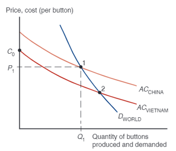
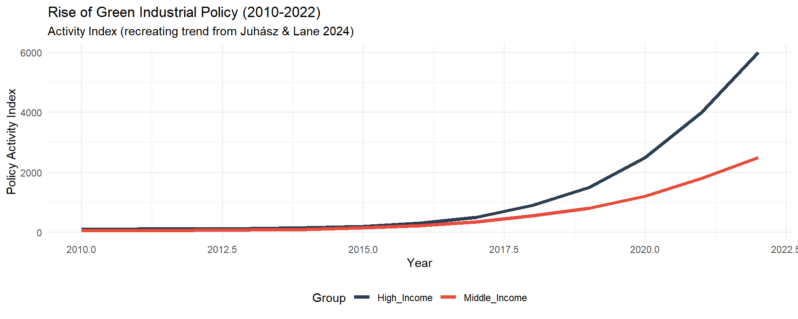
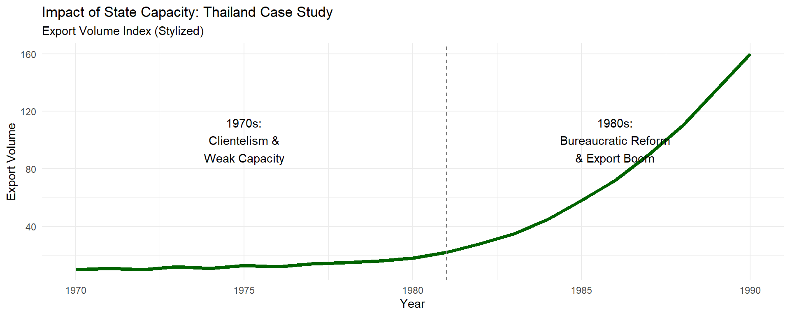
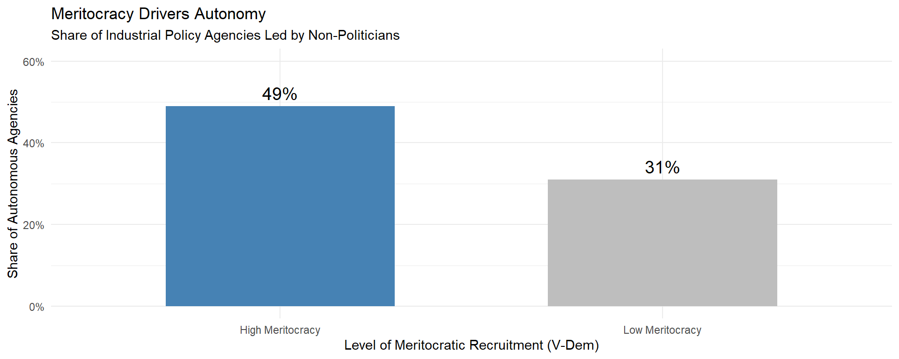

Advanced International Economics
2026-02-10
We focuses today with industrial policy.
Justification for industrial policy (flashback a bit).
Recent development in industrial policy (GVC, national security, climate change).
Tools, requirement, moving forward.
Popularity is growing among governments and even among economists.
This field is going really fast. It’s trending at the moment and still up for debates.
Principles, however, kinda similar. Pay close attention to the principles of industrial policy.
Efficiency isn’t always the goal. Deviate a bit from your typical ecoonomist stuff.
What’s a comparative advantage? What’s a revealed comparative advantage?
Why Ricardian, Specific factor model and Hecksher-Ohlin suggests trade is efficient?
What’s a terms of trade?
What is the impact of tariff and export subsidy?
Remember external and internal economies of scale? What market failure underlies them?
Industrial policy: policies which goal targets the growth or employment of a certain sectors.
Siglitz, Chang: Any policy is industrial policy, including free market!
boosting STEM benefits STEM-using industries, free market helps boost financial services, infrastructure projects benefit industry native to that location.
To them, IP is about the instrument rather than the goal.
Prebisch-Singer theory: Primary goods exporters (which are also manufactures importers) faces decreasing terms of trade (TOT).
Without some way to leapfrog, a country will enter a middle-income trap if not worse.
Infant industry argument: Developing a sector in its infant stage which can sustain itself without any policy in maturity stage (ready to compete with foreign products).
A country’s comparative advantage is not static. Following comparative advantage in HO sense may even backfire:
Developing non-comparative advantage industries may require government’s assistant since there exists market failures.

External economies of scale leads to a downward-sloping supply curve: quality-adjusted cost goes down as production increases.
Incumbent has cost advantage, and new entrant needs help to build scale.
Why? positive externalities and learning-by-doing,
Coordination problem: A new sector needs to reach a critical scale to be viable.
tool makers won’t make tools unless the industry that uses it exists, but the industry won’t exist without tool makers.
Why study data science if there are no data collectors & industries that use data science? OTOH, firms won’t come if they cannot find talent.
remember external economies of scale & agglomeration?
Coordination matters on how much to produce: too much, then not enough profit to upscale.
Learning externalities: sometimes firms do not know what products can succeed in the market, what kind of market they are entering (especially in the export market).
Sometimes market solve this:
Sometimes it requires a push from the government, particularly amid spillover effect.
Imperfect capital market: Developing countries lack good quality financial institutions, hence more credit constraints.
However, evidence emerges since the various crises that the market is not as efficient in general.
Even in the developed world, finance does not come to the promising future industries.
State intervention is as old as the state itself.
Free trade (and deregulations in general) were mainstream due to dominance of government failure.
Rent-seeking by sectors, corruption, inefficient SOEs, mercantilist pressure, land & real estate grabbing.
Failed to plan exit strategy: forever infant.
The argument goes, market reform helps with eliminating government’s failure.
However, the existence of market failure means deregulation will not leapfrog/moonshot an certain industries.
Debates are shifting from “should we do industrial policy” to “how should we do industrial policy”
Reducing government failure is a critical step for any industrial policy.
More issues emerge that stand beyond economic growth & economic efficiency:
Pandemic shows how fragile countries’ value chains are. Even though Global Value Chain (GVC) can be considered efficient, the needs for resilience emerges in critical sectors even if one should sacrifice efficiency.
Climate change forces regions to conduct innovations needed for green transitions.
Some industries have important societal implications. The goal is to provide good jobs because redistribution policy is either inadequate or non-existent.
Rising geopolitical tensions changes priorities and global institutional structures.
| Target | Rationale |
|---|---|
| Green innovations | Acceleration in green technologies |
| Labor market effects | Discourage labor saving technologies that disrupts labor markets |
| Spillovers to other sectors | Support sectors that generate innovations crucial for other sectors |
| Defense/self-sufficiency | Develop innovations in strategic technologies |
| International competitiveness | Develop domestic technologies to capture global market share or improve ToT |
| Local spillovers | Promotes agglomerations / external economies of scale |
The Pattern: While carbon pricing remains politically difficult (<1% of emissions covered at adequate prices) [7], Green Industrial Policy has seen exponential growth.
Why choose “Inefficient” Policies? 1. Political Feasibility: Carbon taxes impose immediate, visible costs on voters. Green IP (subsidies) offers concentrated benefits. 2. Shifting the Equilibrium: IP creates new constituencies (green workers, renewable firms) that will lobby for future climate action, making “first-best” policies possible later. 3. The “Second Best”: Working within political constraints often means choosing the “second best” economic policy to ensure it actually survives.
The classic failure mode of Industrial Policy is the Infant Industry Trap. 1. Theory: Protect industry temporarily → Firms learn/grow → Remove protection. 2. Reality: Firms know the government can’t credibly commit to removing aid. They lobby for permanent protection instead of innovating. 3. Solution: Policies must be designed to “self-destruct” (Sunset Clauses) or be managed by autonomous bodies to enforce discipline.
“State capacity does not fall from the sky… it is a human artifact.” Successful IP requires: 1. Bureaucratic Autonomy: The ability to implement policy without political interference. 2. Embeddedness: Continuous information exchange with the private sector.
1970s (Failure): Weak bureaucracy, politicized patronage, inability to monitor firms or discipline exports. 1980s (Success): Investment in state capacity, creation of “Deliberation Councils” (Joint Public-Private Sector Consultative Committee), and meritocratic reforms led to an export boom.
How do we prevent political capture? Meritocracy. Countries that recruit officials based on skill (not connections) are more likely to have autonomous agencies led by experts rather than politicians.
To make Industrial Policy work, we need a “Political Economy” checklist: 1. Delegate Authority: Use independent experts (like Central Bankers) where possible to run IP agencies. 2. Embedded Autonomy: Talk to firms to get data, but retain the power to say “no”. 3. Sunset Clauses: Plan for policy termination to prevent zombie industries. 4. Invest in Capacity: You cannot implement modern IP with a 1970s bureaucracy. Capacity must be built, not assumed. “Government failure is not a necessary feature… it is endogenous.”
Pursue industries with unlearned technologies (either pursuing frontiers or breaking it).
Accountability from the receiver of supports (eg performance targets & exit clause)
Maintain competition both domestic and globally.
Independent experts for evaluations. (Australia: Productivity Comission, Indonesia: UKP4)
Corruption control (ethics, strong anti-corruption bodies).
Targeting: Which sectors & why? What are the market failures? Do we have enough resources to deal with the market failure? What is the goal to impose to this sector? (jobs created, new tech discovered, how much exports, etc)
Implementation: How to assist? What type of public supports are needed? How long should they last? Can we minimize government failures? How to monev?
Governance: who decides which sectors to target? Who is the PIC of which intervention? Who conducts the monev? Who coordinates the action plan? Who collect market feedbacks?
Cherif & Hasanov (2019): Often emerge in a tradable goods & services sectors with high degree of R&D and high-skill labors.
The argument for new industrial policy requires a newly emerged industries, not an old one.
Examples: high-tech manufacturing, transportation, communications, financial intermediaries, business services (Cherif et al. 2022),
Other industries? Solve the government failure first!
Must conducted rigorously: capital & labor’s opportunity cost
unless labor are taken from unemployment.
demand for capital can be seen in growth of consumer credit relative to production credit.
Assessing cost is often easier than benefit amid uncertainty (another market failure).
The government must be prepared to absorb loss (but this is exactly why industrial policy was scrutinized).
Create new capabilities in sophisticated industries (kinda like scholarships).
Test this capabilities by exporting. Surviving or even thriving international competitions are good signs of successful products & services.
Competitive and strict accountabilities with conditionalities.
Many classic trade tools (tariff and NTMs) are prohibited by trade agreements.
Export promotion: lower income tax from export revenue, import subsidies for important inputs, export credit subsidies.
Attracting FDI (for spillover purposes) with tax incentives often too costly with little benefit.
Tax incentives to use domestic supplies works better than LCR.
Provide certainty of demand from government procurement.
Indonesia’s LCR/TKDN and other import-limiting approach has been widely criticised.
Not without warrant: empirically, import-substitution results aren’t good:
limiting import creates incentives to exploit local market, reducing incentives to compete globally.
imported inputs embed advantages for good output and learnings.
Training for workers with specific skills required by the targeted industry.
improve vocational education & training.
work very closely with the industry.
tax incentives to encourage apprenticeship.
Avoid rigid labor regulations.
tax incentives for capital investment.
Direct lending has mixed results, require general knowledge of credit constraint.
Credit guarantee can create moral hazard.
Indonesia is much more conservative after 1998.
Special Economic Zones: encourage agglomeration, reduces uncertainty in the land market, and can be subject to special price for land. Additionally, can be controlled by the central government.
R&D subsidy (or via tax incentives), or direct R&D using the state budget.
Macroeconomic stabilisation may benefit one sector than others (e.g., international borrowings vs exports).
New industrial policies emphasize on the use of global market instead of import substitution.
Mostly use tax incentives or some type of subsidies.
Rich countries with AAA bond ratings are in better position to finance their industrial policies.
Using tax incentives may reduces other welfare improving programs, and may reduce evaluation budget.
Endogeneity of treatment: industrial policy typically assigned non-randomly.
researchers usually rely on natural experiments.
Better evaluation design requires a degree of randomness, or at least quasi-experiments.
Just because policy exists does not mean it will be used.
Lack of attention given to evaluation process: data procurement and monev.
Industrial policy in trending thanks to admission of market failure and emerging global challenges.
Innovation / pursuing new technologies, NOT protecting existing industries is the ultimate goal of a well-designed industrial policy.
Trade is important: export for performance evaluation, import for intermediate inputs & learning.
Limiting the impact of government failure is critical.
Aiginger, K., & Rodrik, D. (2020). Rebirth of Industrial Policy and an Agenda for the Twenty-First Century. Journal of Industry, Competition and Trade, 20(2), 189-207. https://doi.org/10.1007/s10842-019-00322-3
Chang, H.-J., & Andreoni, A. (2020). Industrial Policy in the 21st Century. Development and Change, 51(2), 324-351. https://doi.org/https://doi.org/10.1111/dech.12570
Cherif, R., & Hasanov, F. (2019). The Return of the Policy That Shall Not Be Named: Principles of Industrial Policy. IMF Working Paper, 19(74).
Ing, L. Y., & Grossman, G. M. (2023). Local content requirements: promises and pitfalls. Routledge. https://doi.org/10.4324/9781003415794
International Monetary Fund. (2022). Industrial Policy for Growth and Diversification: A Conceptual Framework. IMF Departmental Paper.
Juhasz, R., Lane, N., & Rodrik, D. (2023). The New Economics of Industrial Policy. Unpublished. https://drodrik.scholar.harvard.edu/sites/scholar.harvard.edu/files/dani-rodrik/files/the_new_economics_of_ip_080123.pdf
Juhasz, R., Lane, N., & Rodrik, D. (2024). The Political Economy of Industrial Policy. Journal of Economic Perspectives. 38(4).
Stiglitz, J. E. (2015). Industrial policy, learning, and development. WIDER Working Paper 2015/149. https://www.wider.unu.edu/publication/industrial-policy-learning-and-development